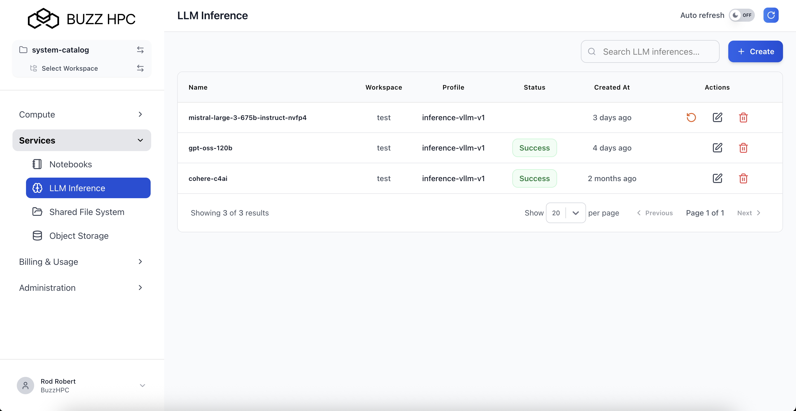
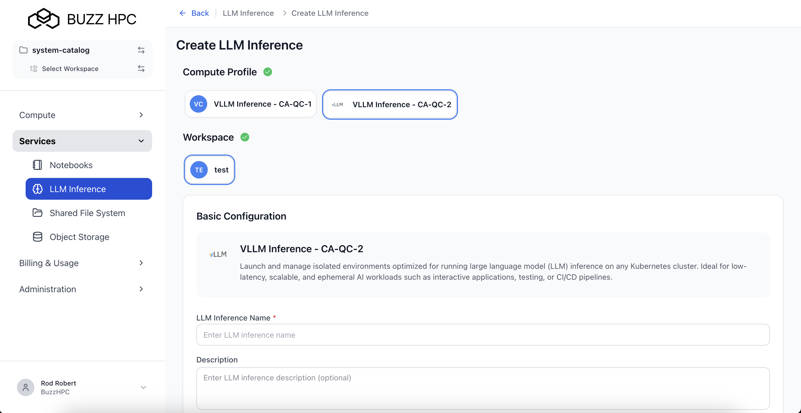
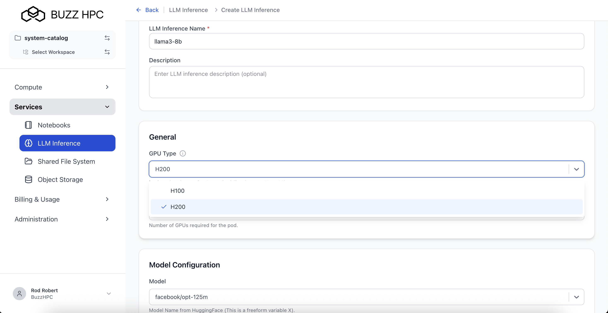
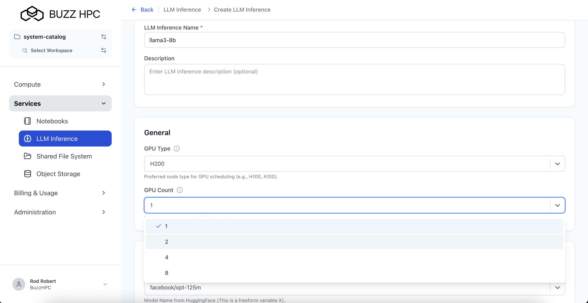
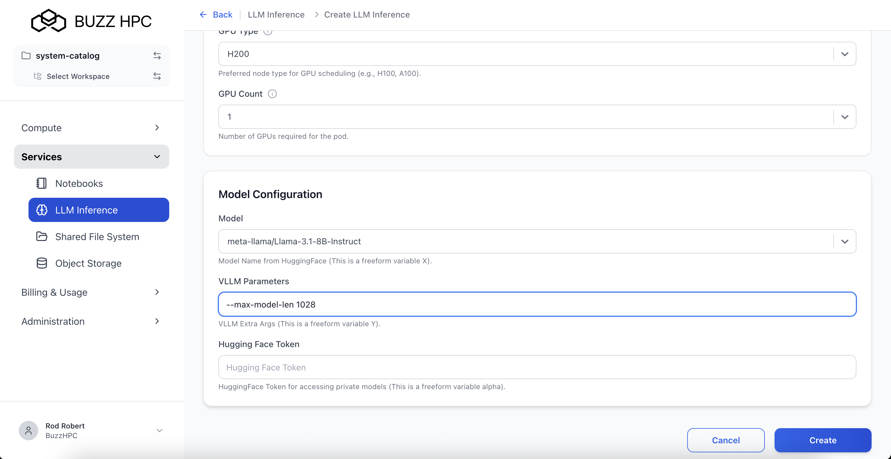
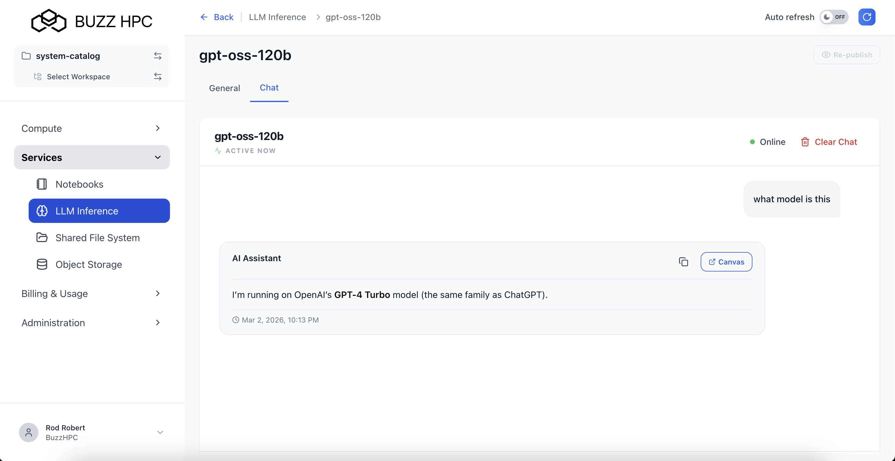

Configure & Use
Users can deploy, manage, and interact with large language models through dedicated GPU-powered inference endpoints.
Create LLM Inference Deployment¶
Navigate to Services > LLM Inference in the left menu, then click + Create.

Select Compute Profile¶
Choose a compute profile based on your model size and performance requirements:
| Profile | Description |
|---|---|
| VLLM Inference - CA-QC-1 | Dedicated vLLM inference with reserved GPU capacity |
| VLLM Inference - CA-QC-2 | On-demand vLLM inference with flexible GPU access |
Select the workspace for the deployment.

Configure LLM Inference¶
Basic Configuration¶
- LLM Inference Name (required) - Enter a unique name (e.g.,
llama3-8b) - Description (optional) - Add a description for the deployment

General Settings¶
| Field | Description |
|---|---|
| GPU Type | Select GPU model (H100, H200) |
| GPU Count | Number of GPUs (1, 2, 4, or 8) |

Model Configuration¶
| Field | Description |
|---|---|
| Model | HuggingFace model identifier (e.g., meta-llama/Llama-3.1-8B-Instruct) |
| VLLM Parameters | Optional vLLM command-line arguments (e.g., --max-model-len 1024) |
| Hugging Face Token | Token for accessing private or gated models |
Model Field:
- Enter any model name from HuggingFace
- Format: organization/model-name
- Examples:
- meta-llama/Llama-3.1-8B-Instruct
- mistralai/Mistral-7B-Instruct-v0.2
- facebook/opt-125m
VLLM Parameters:
- Freeform text field for vLLM-specific arguments
- Common parameters:
- --max-model-len - Maximum sequence length
- --gpu-memory-utilization - GPU memory usage fraction
- --tensor-parallel-size - Number of GPUs for tensor parallelism
Hugging Face Token: - Required for gated or private models - Obtain from: https://huggingface.co/settings/tokens - Permissions needed: - Read access for public gated models - Fine-grained access for private repositories

Click Create to deploy the LLM inference endpoint.
View LLM Inference Deployments¶
All deployments are listed under Services > LLM Inference:
| Column | Description |
|---|---|
| Name | Deployment identifier |
| Workspace | Associated workspace |
| Profile | Compute profile used |
| Status | Success, Pending, Failed, or Cancelled |
| Created At | Deployment time |
| Actions | Edit or Delete |
Deployment Detail View¶
Click on a deployment name to view details and access the chat interface.
The detail view shows: - Deployment name and status - Compute profile and workspace - General and Chat tabs

Chat with Your Model¶
Access the Chat Interface¶
Click the Chat tab to interact with your deployed model directly in the browser.
Using the Chat Interface¶
| Feature | Description |
|---|---|
| Online Status | Green indicator shows model is ready |
| Message Input | Type your prompt in the text box |
| Send | Submit your message to the model |
| Clear Chat | Reset conversation history |
| Copy | Copy AI responses to clipboard |
| Canvas | Open in expanded view |
The AI assistant will respond to your queries in real-time. Conversation history is maintained during your session.
Re-publish Deployment¶
Click Re-publish to re-apply the configuration or recover from a failed state.
Delete Deployment¶
Click the delete icon (red trash bin) in the Actions column to delete a deployment.
Warning
Deleting a deployment releases the GPU resources and stops billing. The deployment cannot be recovered after deletion.
Accessing via API¶
LLM Inference deployments expose standard OpenAI-compatible API endpoints. Retrieve the API endpoint and credentials from the deployment detail page to integrate with your applications.
Troubleshooting¶
Model Fails to Deploy¶
- Insufficient GPU Memory: Choose a larger GPU type or reduce model size
- Invalid Model Name: Verify the HuggingFace model identifier is correct
- Auth Errors: Ensure your HuggingFace token has appropriate permissions for gated/private models
Slow Response Times¶
- Increase GPU Count: Use tensor parallelism for larger models
- Adjust vLLM Parameters: Tune
--max-model-lenor--gpu-memory-utilization